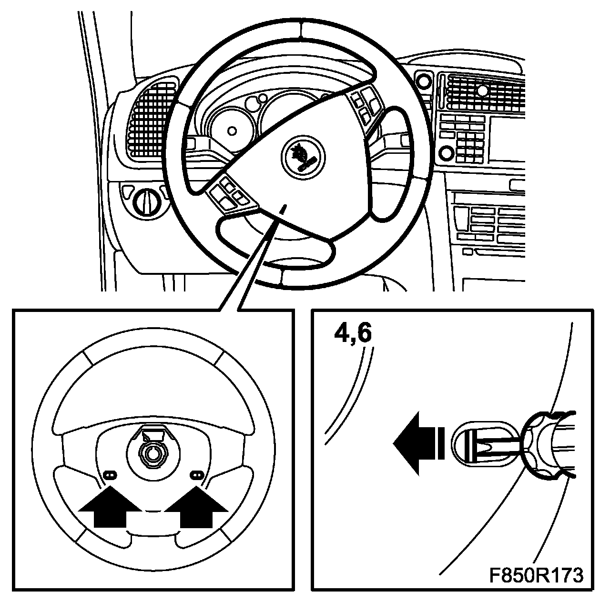
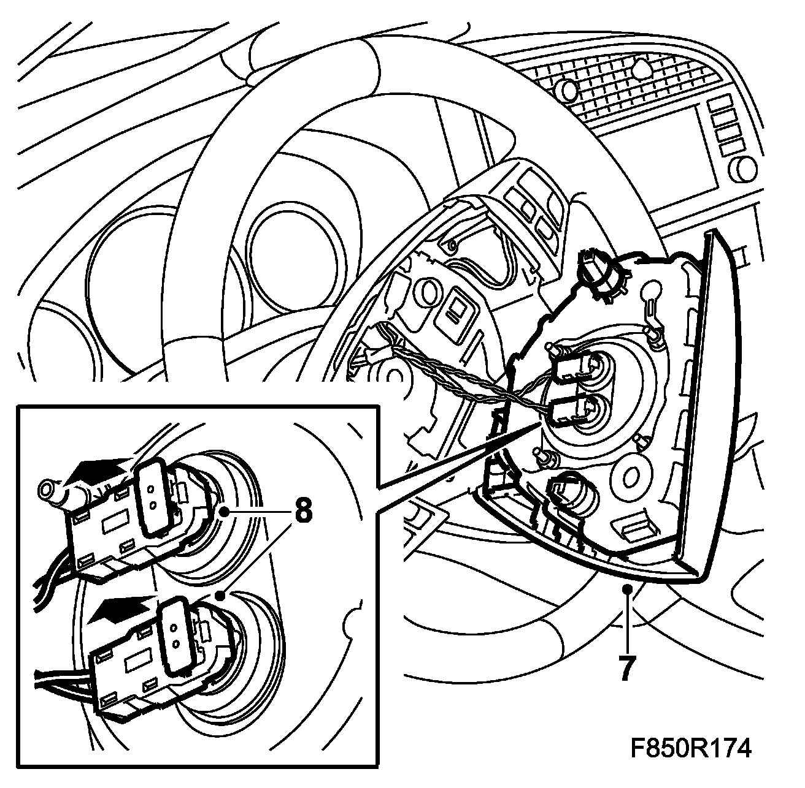
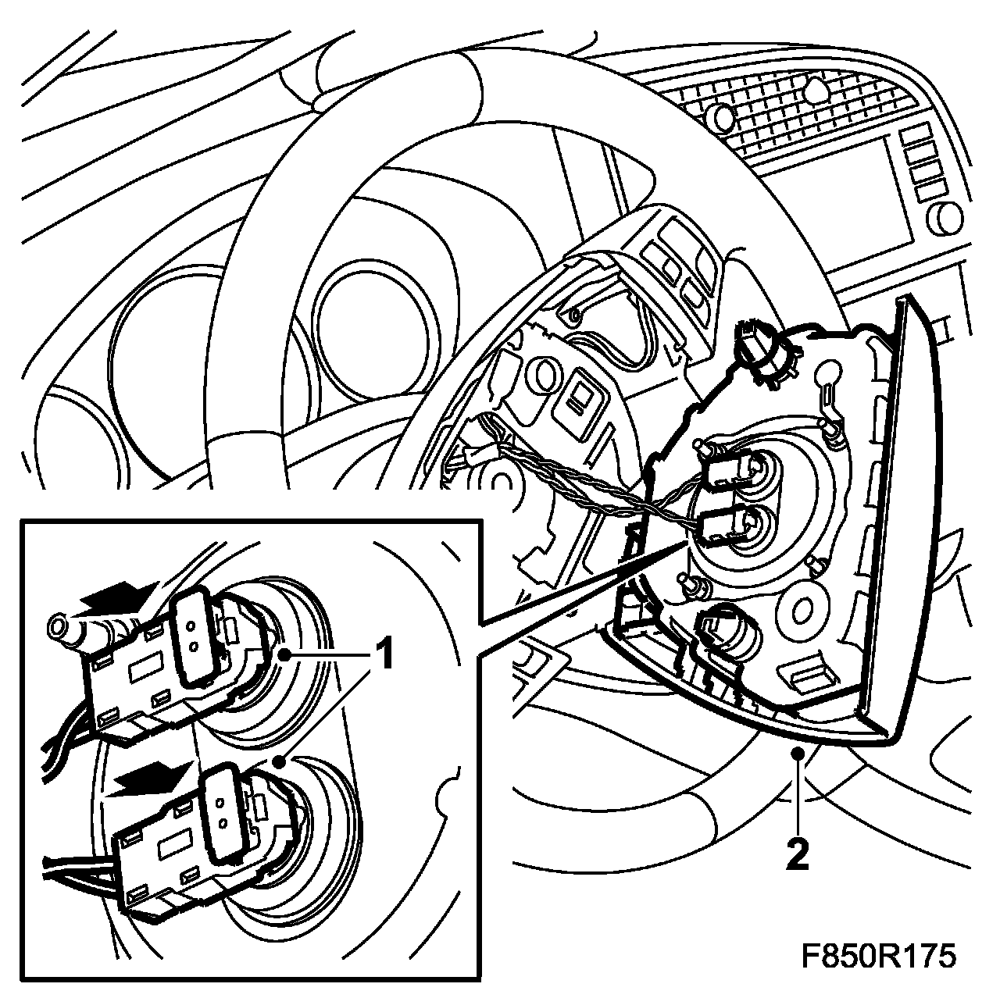

Airbag, Driver (333D)
Airbag, Driver (333D)
WARNING: Read through Safety and handling instructions and Before removing a control module before starting work.
To remove
WARNING: The battery's ground cable must be removed before the positive cable. Wait for at least 1 minute after disconnecting the battery before beginning any work on the airbag system. Otherwise the airbag may be deployed unintentionally and this can cause fatal/severe personal injuries.
1. Turn the ignition switch to the position LOCK and let the key remain in the switch.
NOTE: The steering column lock can be unlocked when carrying out the work.
2. Loosen the steering wheel adjustment and pull the steering wheel as far back as possible.
3. Turn the steering wheel 45° in one direction from the straight on position.
4. Bend away the spring clip with a screwdriver in the hole on the back of the steering wheel.

5. Turn the steering wheel 45° past the straight on position in the other direction.
6. Bend away the spring clip with a screwdriver in the hole on the back of the steering wheel.
IMPORTANT: Exercise the greatest caution when the airbag is removed. There is a significant risk that the connector in the steering shaft control module will be broken.
NOTE: Exercise caution with the wiring harness when the airbag is removed from the steering wheel.
7. Carefully pull the airbag away from the steering wheel.

IMPORTANT: Take care when releasing the locking mechanism on the connector so as not to damage the connector. Pull the halves straight apart to avoid bending the pins.
8. Pull up the connector catches using a small screwdriver. Remove the connector.
To fit
IMPORTANT: Take care when plugging in the connector so as not to damage or press out the pins/sleeves in the connector.
1. Fit the connector and press in the catches.

2. Fit the airbag in the steering wheel.
3. Connect the battery.
4. Turn ON the ignition switch and check the airbag system and control module using the diagnostic tool as follows:
Connect the diagnostic tool to the data link connector under the dashboard. Delete any diagnostic trouble codes.
Turn the ignition OFF and then ON again. Wait at least 10 seconds with the ignition on. Check whether a diagnostic trouble code is shown:
If a diagnostic trouble code is shown:
Carry out fault diagnosis according to the instructions under respective trouble codes.
If a diagnostic trouble code is not shown:
The assembly was successful. Disconnect the diagnostic tool.
5. Carry out Measures after disconnecting the battery.